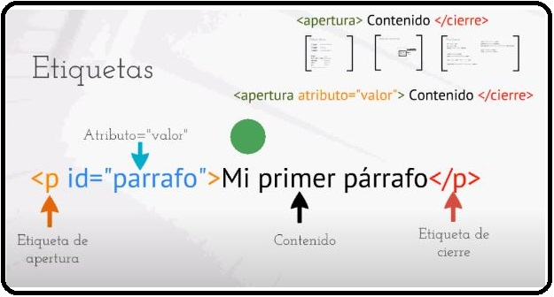
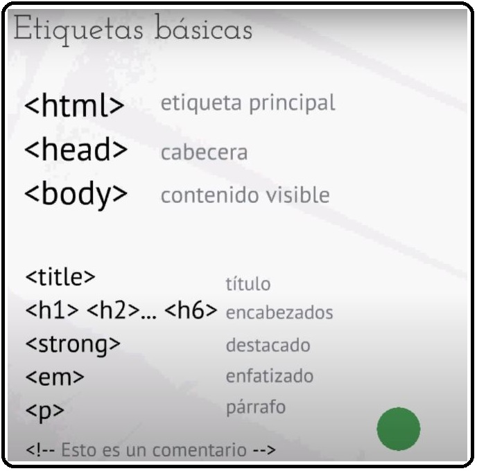

Una etiqueta en HTML conta en tres partes, una etiqueta de apertura, contenido de una etiqueta y la etiqueta de cierre. El contenido es simplemente el texto que deseamos agregarle a la etiqueta, teniendo en cuenta que en cualquier pagina web el contenido de una etiqueta se anida, esto quiere decir, que dentro de esa etiqueta a su vez existen otras etiquetas.

Partes de una etiqueta
Dentro de las etiquetas basicas de html existen unas que siempre deben de implementarse siempre en cualquier documento de HTML. Como la etiqueta principal que seria <HTML>, la cual siempre va a anidar al resto de etiquetas. Luego encontramos como etiqueta
secundaria o como etiqueta cabecera <head>, la cual van anidadas las etiquetas de configuracion de nuestra pagina web y por último aparecera la etiqueta <body>, la cual nos permitira anidar todas las etiquetas que van a hacer visibles dentro de nuestra página web.
Luego de conocer las tres etiquetas más importantes y primordiales de etiquetas en una estructura de HTML, se pueden reflejar otras etiquetas el cual nos va a permitir reestructurar lo importante que queremos ingresar a nuestra página web. En el primer lugar,
podríamos hablar sobre la etiqueta <title>, la cual significa "Titulo", la cual nos va a servir para insertarle un título a nuestro texto de nuestra página web, la cual aparecerá dentro de nuestra cabecera. Luego vamos a encontrar dentro del cuerpo ciertas etiquetas la cual
van a permitir visibilizar nuestro texto, como, por ejemplo, los encabezados, el cual va <h1> <h2>...<h6> la cual representa los seis niveles de encabezados para nuestras páginas web. También podremos ver otras etiquetas especiales como <strong> llamada
"destacado", y <em> conocido con enfatizado, la cual nos permite enfatizar y destacar cierto contenido dentro de nuestra página web. <strong> nos permite destacar texto en negrita y <em> en cursiva. Otra etiqueta super importante en HTML es la etiqueta <p>,
la cual nos sirve para insertar párrafos, y por último una etiqueta especial seria <!-- Insertar comentario --¡>, la cual nos permite insertar comentarios durante la realización de codigos para una pagina,
esto nos permitira establecer notas y asi mas adelante podremos darnos cuenta de lo que quedo faltando o simplemente de lo que ya no hay que adicionarle mas nada.

Partes de una etiqueta 2
Otras de las etiquetas que se pueden utlizar para estructurar una pagina web es la <a>, la cual se puede utilizar para añadir enlaces tanto internos como externos a nuestra web. Añadiremos el atributo href=»url_web» para la dirección web, y target=»_blank» para hacer que el enlace se abra en una nueva ventana del navegador. la etiqueta <img> Como indican sus siglas se emplea para añadir imágenes, siempre va a ir acompañado del atributo src=»ruta_de_la_imagen» para mostrar la imagen. En este caso en concreto la etiqueta img no se cierra.
Actualmente se ha renovado nuestro lenguaje Html a Html 5, que es la actualizacion del antiguo Html, pero con una gran ventaja que las etiquetas HTML siguen siendo las mismas, simplemente se añaden nuevas. HTML5 tiene unas características especiales para el desarrollo de aplicaciones modernas basadas en el navegador y para hacer la experiencia web mas semántica.
Algunas de las nuevas etiquetas HTML 5 son las siguientes:
<nav>: Se emplea para colocar un menú de navegación.
<section>: Delimita un área específica donde hay contenido. Por ejemplo, en un blog sería donde van todos los artículos, al igual que en la parte de los comentarios, ya que delimita otra zona de la página web.
<article>: Indica contenido independiente. Siguiendo el ejemplo de un blog, si estamos diseñando la página principal, cada post podría ser un article.
<aside>: Vendría a ser el menú lateral que tienen la mayoría de páginas web y que muestran información como las categorías, enlaces, etc.
<video>: Con esta etiqueta insertamos un vídeo. Viene acompañado de los atributos src para indicar la url del vídeo o width y height para definir el ancho y alto.
<audio>: Funciona de la misma manera que la anterior etiqueta, pero esta vez para insertar audio.
<footer>: Marca el pié de la página web, o lo que es lo mismo, la parte final de la web, donde aparece el autor, términos de uso, licencia, etc.
Referencias Bibliográficas
• Celaya Luna, A. (2014). Creación de páginas web: HTML 5 (pág. 1 a 60). Recuperado de https://elibro-net.bibliotecavirtual.unad.edu.co/es/ereader/unad/56045
• Aprender es Fácil. (2013, 27 abril). Curso de HTML - Capítulo 3: Etiquetas básicas [Vídeo]. YouTube. https://www.youtube.com/watch?v=gHIQ1ik1x2U
• Puig, A. (2016, 1 febrero). Etiquetas HTML básicas que deberías conocer para salir de un apuro. Alfonso Puig. https://alfonsopuig.es/etiquetas-html-basicas/
• Garzón, D. (s. f.). Atributos y Valores en HTML. Github. Recuperado 15 de septiembre de 2021, de https://diegogt11.github.io/DSW-DiegoGarz-n/fase3/temas2.html